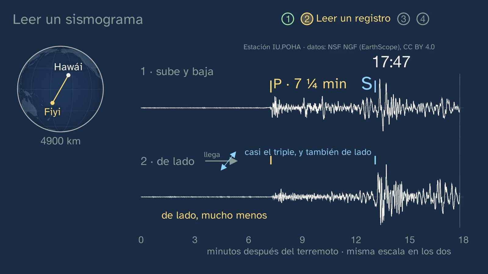
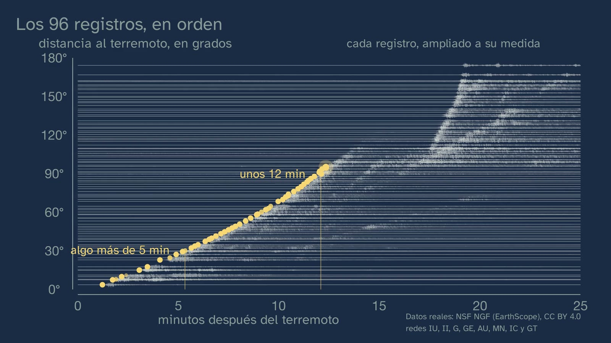
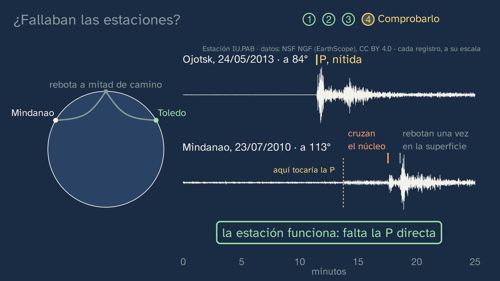
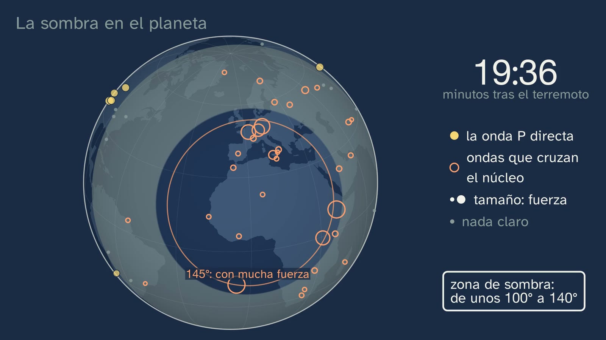
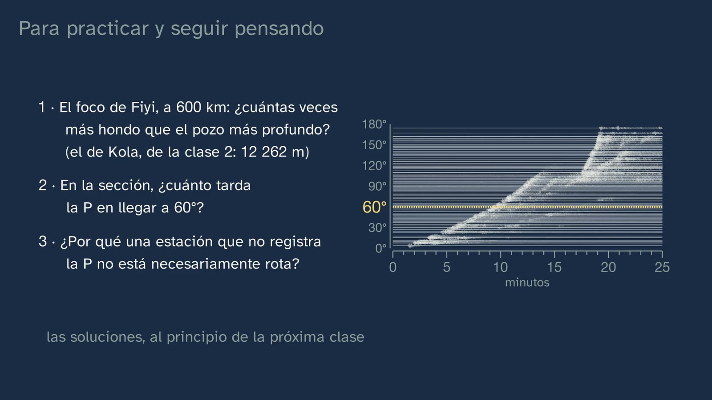

The shadow of the core
In a nutshell
This is the lab class on the seismic method, and its lab is real data: the seismograms of the Fiji earthquake of 19 August 2018, of magnitude 8.2 and 600 km deep, recorded at stations all over the world and open to anyone. The class's question is what you discover when you put them in order of distance, and the answer is the core shadow zone.
First, the tools: what a seismometer records (a mass hanging from a spring that, because of its inertia, almost stays still while the ground moves) and the two waves that travel through the inside, the P, which pushes and stretches, and the S, which shakes sideways and does not cross liquids, with the reason why. Then a real record, the one from Hawaii, at 44°: the P at seven and a quarter minutes, the S almost 6 minutes later, and the same record turned into sound. A comparison at the same station in Australia explains why a deep earthquake was chosen: it gives almost no surface waves, and the P stands out.
The heart of the class is the record section: 96 real records, the cleanest in each distance band, stacked one above the other, from the nearest to the farthest. The arrival of the P draws a curve that fades out at around 100°, and a bar chart of the measured strength confirms it with numbers: from 30° to 90° the P weakens about eight times; from 90° to 120°, more than a hundred. Then comes the control, with a Spanish station, San Pablo de los Montes (Toledo): it records the P of an earthquake at 84° sharply, and not that of another at 113°, although other waves arrive clearly in that same record. The station works; what is missing is the direct P. The globe puts the shadow on the planet, minute by minute: a ring between about 100° and 140° that on that day passed through New York, Moscow and Johannesburg, while Toledo, at 158°, clearly received the wave that had crossed the core. The class stops to think about what it means (an Earth that was the same all the way through would cast no shadow; a ring that is the same in all directions and with any earthquake calls for something round at the centre), separates the fact from the interpretation, takes apart the idea that nothing reaches the shadow and leaves two puzzles for class 4.
Objective. By the end, students will be able to read real seismograms of a large earthquake recorded all over the world, tell P waves from S waves, and discover the core shadow zone in those data.
What this sheet adds:
- the nuances the voice does not mention: why the textbooks' shadow is 103–143° and the one in these data starts at around 96–100°, what arrives inside the shadow, why each record is at its own scale and which stations were removed, and why;
- the mistakes to expect;
- the solutions to everything;
- an activity of about 20–25 minutes, "The shadow, hands-on", with the printed record section and a table of arrivals, so that students find the shadow in the data;
- the program that makes the record section, to repeat the activity with another large deep earthquake, with four earthquakes already tested;
- open resources to go further, among them seismogram viewers in the browser and the USGS and IGN catalogues.
The words. The voice describes the waves without giving their technical names, and it is worth knowing which is which. "The wave that goes around the core", very weak, is the diffracted P (Pdiff). "The ones that bounce off the surface" are the PP, which bounces once halfway along. "The ones that cross the core" are the PKP and the PKIKP (Inge Lehmann's P′, in class 4). The class says seismometer for the part that senses the movement and seismograph for the whole instrument (3:18). Distance is given in degrees: the angle between the epicentre and the station, seen from the centre of the Earth; one degree is about 111 km along the surface (8:19).
For readers outside Spain: the Bachillerato is the last two years of secondary school (ages 16–18), and ESO is the compulsory stage before it (ages 12–16). The video is in Spanish, with English subtitles; the images on this sheet come from the video and keep their Spanish text. In Spain the decimal separator is a comma (8,2 means 8.2); this English sheet uses points.
Curriculum
Spain's Royal Decree 243/2022, Biology, Geology and Environmental Sciences, consolidated text in the Official State Gazette, BOE (the lab's copy, checked for the topic sheet; its latest update, of 02/07/2026, only affects article 23.4). Our translation of the official Spanish text. The minutes are those of the video.
| Element | What the decree says | Where the class works on it |
|---|---|---|
| Core knowledge (block D, "The Earth's dynamics and composition") | "Structure, composition and dynamics of the geosphere. Direct and indirect methods of study." | The seismic method, the most powerful of the indirect ones (0:36): the seismometer (3:18), P and S waves (4:04 to 4:54), the record section (8:19 to 10:58), the shadow on the planet (12:48) and what it means: something round and different at the centre, the core (14:42) |
| Core knowledge (block A, "Scientific project") | "Laboratory or field experiments: design, planning and execution. Testing hypotheses. Experimental controls." | Two predictions before seeing (5:10 and 8:50); the control with the Toledo station, "testing the method where we already know what should come out" (11:27 to 12:48) |
| Core knowledge (block A) | "Methods for analysing scientific results: organisation, representation and statistical tools." | Putting the records in order of distance (9:16); the strength of the P in 10° bands, with the median of each (10:30); the globe, with the size of each dot according to its strength (12:48). In the activity, the time–distance graph |
| Specific competence 1 | "To interpret and communicate scientific information and data, arguing about them precisely and using different formats to analyse processes, methods, experiments or results of the biological, geological and environmental sciences." | Three formats for a single result: the record section, the bar chart and the globe (9:16 to 14:42) |
| Specific competence 3 | "To design, plan and carry out research projects following the steps of scientific methodologies, taking the available resources realistically into account and seeking ways to collaborate, in order to investigate aspects of the biological, geological and environmental sciences." Its description asks students to "understand in depth the difference between an impression or opinion and evidence". | "And it isn't just an impression from the drawing": the measured strength (10:30); the fact and the interpretation, in two boxes (15:39) |
| Criterion 1.1 | "To critically analyse concepts and processes related to the subject's knowledge, interpreting information in different formats (models, graphs, tables, diagrams, formulas, schemes...)." | Reading a seismogram (5:10), the record section (9:16 to 10:58), the bars (10:30) and the globe (12:48) |
| Criterion 3.1 | "To ask questions, make predictions and formulate hypotheses that can be answered or tested using scientific methods and that attempt to explain biological, geological or environmental phenomena." | The Hawaii prediction (5:10), the bet on A, B or C (8:50) and the hypothesis in the stop and think: what could cast a shadow like this (15:22) |
| Criterion 3.4 | "To interpret and analyse the results obtained in a research project, using mathematical and technological tools when necessary, recognising their scope and limitations, and drawing reasoned, well-founded conclusions or assessing the impossibility of doing so." | The scope and limits of the data: each record is enlarged to fit (9:16), and that is why the strength has to be measured (10:30); the control (11:27); the textbooks against the data, because the edge is not a sharp line (14:23); what is fact and what is interpretation (15:39) |
What this sheet's activity adds. Criterion 1.2, "To communicate reasoned information or opinions related to the subject's knowledge or to scientific work, conveying them clearly and rigorously, using the appropriate terminology and format (models, graphs, tables, videos, reports, diagrams, formulas, schemes and symbols, among others) and digital tools": students build their own time–distance graph. And, with the program, 4.1, "To solve problems or explain biological, geological or environmental processes, using varied resources such as one's own knowledge, data and information gathered, logical reasoning, computational thinking or digital tools".
How the class is built
Video chapters
About nineteen minutes, in thirteen chapters. It is a lab class: Nil wears a lab coat, and the lab is a seismologist's data. It follows the cycle of predict, observe and explain: two predictions, the record section built record by record, a test with numbers, a control and the interpretation, kept apart from the fact. Nil appears on camera four times: in the greeting (0:00), with the hook (2:08), halfway (11:20) and in the goodbye (18:52).
| Part | What happens | Why this way |
|---|---|---|
| What we'll see (0:00) | The map of the topic, with the third class highlighted. | Knowing where you are. |
| A question from the previous class (0:23) | What is an indirect method? Pause. It measures something from the outside and works out what the Earth is like inside: what it weighs, the magnetic field… and one is missing, the waves. | Retrieving exactly what is used today. |
| Solutions to the previous class (0:58) | All three, briefly: direct and indirect; one sixth of the volume and one third of the mass; the good and bad points of a xenolith. | Closing what was pending without dragging it out. |
| An earthquake 600 km down (2:08) | The hook, on camera. Focus and magnitude, in one sentence; within twenty minutes, recorded all over the world, and the records are public. The mission, in four steps (2:45). | A real situation and a mission with visible steps. |
| The tools (3:20) | The seismometer, like the gravimeter of class 2; the photo of some 1929 seismographs (3:49); P waves (4:04) and S waves (4:21), and why the S does not cross a liquid; the spring, to do at home (4:54). | What students need to bring, taught from scratch and with its reason why. |
| Reading a seismogram (5:12) | Hawaii, at 44°: what will arrive first, and in which record will it show up better? Pause. The P at seven and a quarter minutes, mostly up and down; the S, almost 6 minutes later, big sideways too (5:44). The sideways record, turned into sound: sped up 250 times and higher-pitched, so that the S can be heard (6:06). The gap between the two grows with distance (6:28). | Predicting before seeing, with a real record. The sound is the same data, for another sense. |
| Deep or shallow (6:51) | What surface waves are, compared with the P and the S: they arise from P and S waves that get trapped near the surface, and they travel hugging it; some make the ground roll and others shake it sideways; they are the slowest, and they weaken less as they travel away, because they only spread out over the surface. Then the same station in Australia with two earthquakes: the shallow Kermadec one gives surface waves eleven times bigger than its P; the Fiji one, at 600 km, less than twice, because so deep it hardly produces them (7:34). | The reason for choosing the earthquake, which a teacher would ask about. |
| All the records, in order (8:20) | Degrees, from the centre. The bet: A, B or C (8:50). The 96 records, one by one (9:16); what do you see (9:42). The P curve (9:53), which fades out at around 100° (10:05); the measured strength, in bars (10:30); the answer: C (10:58). Nil, halfway (11:20). | The phenomenon, in real data, and the test with numbers of what the record section alone cannot show. |
| Were the stations failing? (11:27) | The control: Toledo, with Okhotsk at 84° (11:54) and with Mindanao at 113° (12:06). At the time of the P, almost nothing; almost four minutes later, clear waves (12:22). The station works. | Distrusting what you see, and checking it. |
| The shadow on the planet (12:49) | The globe, minute by minute: the P comes out at the surface up to about 100° (13:15); from 17.5 minutes, the waves that cross the core, strongest at around 145° (13:28); the shadow ring; New York, Moscow, Johannesburg and Toledo (13:57); the textbooks against the data (14:23). | The shadow, with its own geography, and honesty about what the textbook says. |
| What casts the shadow? (14:42) | An Earth that was the same all the way through would cast no shadow. The ring is the same in all directions and with any earthquake. Stop and think (15:22). Something round at the centre: the core; the fact and the interpretation (15:39). | Thinking about what a result means (ADR-099), without getting ahead to refraction. |
| Does nothing arrive? (16:13) | The mistake that the name itself invites: waves do reach the shadow. Two puzzles for class 4 (16:45). | The mistake, out in the open, taken apart with the data themselves; and an appetite for the next class. |
| Practice and keep thinking (17:15) | The recap; three exercises (17:50); the open question (18:28); class 4, with "a Danish seismologist" (18:41); the goodbye (18:52). | The solutions open class 4. |



Links with other subjects. Mathematics I: "Organisation of data from two-dimensional variables" (block E), which is the activity's time–distance graph, and "Formulating, solving and analysing problems from everyday life and from science and technology using suitable tools or programs" (block D, computational thinking), which is the program. Physics in year 2: "Wave motion" and refraction ("Image formation in media and objects with different refractive indices", block C), which will explain the shadow in class 4. Physics and Chemistry in year 4 of ESO: "Light and sound as waves that transfer energy".
What students bring
- From ESO (Royal Decree 217/2022). In Biology and Geology, years 1 to 3, "The basic structure of the geosphere": the layers. The methods of study, on the other hand, are in year 4 ("Structure and dynamics of the geosphere. Methods of study"), which is optional, as are "Experimental controls (positive and negative)". And the wave as an idea is only in Physics and Chemistry in year 4, also optional: "Light and sound as waves that transfer energy". That is why the class teaches from scratch what a P wave and an S wave are, and what a control is.
- From classes 1 and 2 of the topic: the control with half a kilo of steel (class 1), which the class mentions at 11:27; the gravimeter, "a weight hanging from a spring" (class 2), which comes back in the seismometer; direct and indirect methods, and the Kola borehole, 12,262 m, which exercise 1 needs.
- From Mathematics: reading a graph with two axes, and the median.
A plan for a 50-minute lesson
Designed so that students find the shadow in the data before seeing how the video finds it: the problem before the explanation.
| Minutes | What to do |
|---|---|
| 0–2 | No video, with the worksheet: if a large earthquake breaks the rock beneath Fiji, will seismometers in Spain record it? How long will the waves take to arrive? Everyone writes down their answer. |
| 2–12 | Video from 0:00 to 8:50 (if the solutions to class 2 have already been corrected, skip from 0:58 to 2:08). At the pause at 5:42, the Hawaii prediction, aloud. |
| 12–14 | The video's bet (8:50), without watching on: A, B or C, by a show of hands, and everyone writes theirs down. |
| 14–36 | The activity "The shadow, hands-on", in groups (see below). |
| 36–48 | Video from 8:50 to the end. Does what they found match what Nil finds? At the pause at 15:33, the stop and think, in pairs. |
| 48–50 | The exercises and the open question, for homework. |
If time is short, the whole video in class, with its stops (about 22 minutes), and the activity in another session, as a review before class 4.
Notes for teachers
The textbooks say 103–143°; these data, about 96–100°. The voice says so in one sentence (14:23): in the data, the edge is not a sharp line. What lies behind it:
- In a reference Earth model (iasp91), the direct P reaches up to 96.1° with the focus 600 km deep, and up to about 98° with a focus at the surface: in such a deep earthquake, the shadow begins a couple of degrees earlier.
- Beyond that edge there is no silence: the diffracted P, the one that grazes the core and goes around it, keeps arriving, weaker and weaker. That is why, depending on where the threshold of "no longer arriving" is set, the edge comes out at one figure or another. In the Fiji data, the P goes from a median of 41 µm/s between 80° and 95° to 6.6 between 95° and 100°, to 2.2 between 100° and 105° and to 0.2 between 115° and 125° (the class's fact check).
- The textbook figures come from ray drawings on a model: the USGS gives 104° to 140°, and EarthScope's animation in Spanish says that the P tangent to the core comes out up to 103° and the one that crosses it, from 143°. Lehmann, in 1936, was already writing of "the small P beyond about 100˚".
- No number is wrong: they describe slightly different things. It is a good opportunity for criterion 3.4, the scope and limits of a set of data.
The diffracted P. It is what arrives "at the time the P should arrive" inside the shadow (16:14): very weak, about fifty times less than the P just before the edge, but clear at quiet stations, 30 to 470 times above the noise between 100° and 118°. In the record section it shows up as a very thin continuation of the curve beyond 100°, because each record is at its own scale (see below); in the bars at 10:30, as tiny bars of 3.7, 0.8 and 0.2 µm/s. The voice says "a very weak wave, one that goes around the core", and no more: how a wave goes around an obstacle is year-2 physics.
The core waves inside the shadow: Lehmann's puzzle. From about 113° (in the model, 112.8° with this focus) the PKIKP arrives, the wave that also passes through the inner core. In the Fiji data, all 17 stations between 113° and 143° receive it, with a median strength of 16 µm/s (from 2.8 to 37.7): more or less the same as those beyond 151° (15) and as Toledo (14). The class shows it on the globe (13:57) and leaves it as the second puzzle (16:45): if the core casts a shadow, what are they doing there? It is exactly what Inge Lehmann saw: in "P′" (1936) she wrote that this wave is not confined to distances of more than about 143°, but is observed, weaker, down to about 105° (quoted in Kölbl-Ebert, 2001). From this she deduced an inner core where waves travel faster. Better not to tell it before class 4, which solves it; and beware: Lehmann did not say that the inner core was solid.
The maximum at around 145°. The voice says that at around 145° the core waves arrive "very, very strongly" (13:28). In the data, from 143° to 151° the median is 127 µm/s (FURI, in Ethiopia, at 143.1°, 153; SHEL, on Saint Helena, at 145.1°, 177), eight times more than on either side. In the model, the PKP, the one that crosses the outer core, starts arriving at about 143°, and there many rays come together: this is what is called a caustic, like the bright spot made by a magnifying glass. The class does not explain it, because it needs refraction; if a student asks why there, the honest answer is "in class 4". On the globe, the size of the orange rings is proportional to the strength, so that this maximum shows; the size of the yellow P dots grows by the same step for each factor of ten, because the P changes much more with distance (about 3,900 µm/s at 3.6° and about 30 at 90°).
Why each record is at its own scale, and what that implies. Ground motion changes enormously with distance: at the nearest station, at 3.6°, the P moves the ground at 3,919 µm/s; inside the shadow, what arrives at that time is no more than a few tenths of a µm/s. That is four orders of magnitude: at the same scale, the distant records would be flat lines. That is why the record section enlarges each one until it can be seen in full (the voice says so at 9:16, and so does the board: "cada registro, ampliado a su medida", each record, enlarged to fit). The consequence is that in the record section you cannot compare the strength of two records: the core wave looks just as big at 120° as at 145°, and the noise of a quiet, distant station looks as big as a strong arrival at a nearby one. That is why the class adds the bars (10:30) and the size of the dots on the globe (12:48). The same happens with the printed record section, and it is worth saying so before the activity.
The two stations that are missing, and why. The record section has 96 records, chosen automatically from 258 requested from 343 broadband stations in eight open global networks: from each 1.5° band, up to 96° the one with the clearest P, and beyond that the one that stands out most from the noise. Two were removed by hand, and the program says so:
- IU.TARA (Tarawa Island, Kiribati, at 21.4°): that day, its P was no more than 4.1 times the noise. Inside the record section it would have drawn a false gap in the curve, and a student might have answered "the P fades out at 21°". A station on an island has a lot of noise from the sea.
- GE.SNAA (Sanae, in Antarctica, at 90.2°): its P measures about 1,623 µm/s, about forty times more than its neighbours (from 25 to 80), although its metadata are normal. The most likely cause is an error in the instrument response published with the data. It would have raised the median of the 90° bar (35 instead of 29) and the size of its dot on the globe.
- Toledo (IU.PAB) is not among the 96: in its band, another, cleaner station was chosen. What the class says about Toledo with the Fiji earthquake (13:57) comes from its own record, processed separately, and that is how its ring is drawn on the globe: it is at 157.9° and receives a core wave of 14 µm/s, at around 18.8 minutes.
The S has a shadow too, and a bigger one. The class deliberately does not say so: it is an exercise in class 4 ("why is the S-wave shadow bigger than the P-wave one?"). What is worth knowing: the direct S stops arriving at around 100° (in the model, at 96.9° with this focus), like the P, but beyond that it does not come back as an S anywhere, because the outer core, which is liquid, does not let it through (USGS; EarthScope; Earthlearningidea, "Shadowlands"). Its shadow goes from about 100° all the way to the other side of the planet. In the record section, moreover, the S can hardly be seen: the filter from 0.5 to 2 vibrations per second lets the P through well, and the S has longer periods. That is why the S is shown with the Hawaii record, filtered differently (from 0.03 to 0.5 Hz).
The sound at 6:06. It is the real Hawaii record sideways (the transverse component, the one the board labels "2 · de lado", 2 · sideways), in the same band shown on the board (from 0.03 to 0.5 vibrations per second), sped up 250 times (eighteen minutes fit into 4.3 s) and raised four octaves without changing its duration. Why this way: simply sped up, everything would lie between 7 and 125 Hz, too low to be heard; with the pitch raised, the S sounds at around 400 Hz and the P, higher, at around 1,000–2,000 Hz. The sideways record is used because in it the S is much bigger than the P (7.6 times in that band). Measured with a loudness model (Zwicker, ISO 532-1), the S sounds about twice as loud as the P, and the P, well above the noise before it. In a first draft, with the vertical record and another band, the S could not be heard or sounded the same as the P: the filter was swallowing the S. The voice says so: "Even then it would sound too low, so we raise the pitch." It can be heard well with or without headphones.
Kermadec versus Fiji (6:51). Both records are from the same Australian station (IU.CTAO), at 33.6° and 34.3°, filtered between 0.05 and 1 Hz. In the shallow Kermadec earthquake (04/03/2021, about 29 km deep, magnitude 8.1), the late arrivals reach 730 µm/s against 65 for the P: eleven times. In the Fiji one, 255 against 180: 1.4 times. The USGS sums it up like this: deep-focus earthquakes cause less damage at the surface than shallow ones of similar magnitude, although large ones are felt very far away.
The Toledo control, with the numbers. With the Sea of Okhotsk earthquake (24/05/2013, 598 km, magnitude 8.3), Toledo was at 83.6°, and the P arrives at 11.44 minutes, with 33.5 µm/s, about 480 times the noise. With the Mindanao one (23/07/2010, 22:51 UTC, 578 km, magnitude 7.6), at 113.5°, at the time of the P only 0.20 µm/s arrive, against a noise of 0.05; the wave that crosses the core, 3.8 minutes later, gives 1.2, and the one that bounces once off the surface, 3.3: seventeen times what arrives at the time of the P. Two details in case anyone asks:
- The Mindanao one was "somewhat smaller", says the voice (12:06): 7.6 against 8.3, which in seismic moment is about eleven times less. That is why the control does not rest on comparing the two records, but on the Mindanao record itself: if the waves from almost four minutes later arrive clearly, the earthquake was big enough for the P to arrive.
- That day there were three deep earthquakes in Mindanao (at 22:08, magnitude 7.3; at 22:51, 7.6; at 23:15, 7.5). The class's is the 22:51 one, and no wave from the 23:15 one falls within the minutes being looked at.
Dates, in universal time. The Fiji earthquake happened on 19/08/2018 at 00:19 UTC (in Fiji, around midday on the 19th itself). Some USGS pages date it 18 August, which is the date in United States time zones, and EarthScope's seismogram viewer may show the time shifted (see "Open resources"). The 600 km focus is the one in the USGS catalogue, where the rupture began; other solutions for the same earthquake place the centre of the rupture at around 555–580 km (the class's fact check).
Why there are earthquakes at 600 km. They happen inside plates sinking into the mantle. The Fiji one, according to the USGS, "is related to faulting within the subducted Pacific slab", and the Okhotsk one, likewise, in the Pacific plate sunk beneath the Sea of Okhotsk; according to the USGS, it is the largest deep earthquake ever recorded. This belongs to topic 2. And there is one close by: beneath Granada there are earthquakes more than 600 km deep, like the one on 11/04/2010, of magnitude 6.3, at about 610–620 km (USGS; EMSC), which was barely felt at the surface.


Typical mistakes and how they are handled
With an honest caveat: we know of no study that has measured them with Spanish Bachillerato students. The first is anticipated by the topic sheet; the others, by the design of the class.
- "Nothing reaches the shadow zone", or "the ground doesn't shake there". The name itself invites it, and the class takes it apart by looking at the records again (16:14): at the time the P should arrive, a very weak wave arrives, one that goes around the core; then, clearly, the ones that bounce off the surface; and from about 115°, the ones that cross the core. What disappears is the direct P. In the activity it can be seen in the table: KBL (Kabul, 118.7°) has no direct P, but a core wave of 24 µm/s reaches it.
- "If a station does not record the P, it is broken." This is exercise 3, and the class's control (11:27) answers it: the same station records the P of other earthquakes, and other waves arrive clearly in its own record. It is worth adding the other side: sometimes it really is the instrument or that day's noise, as at Tarawa, and that is why it is checked.
- "The shadow is cast by an opaque core", or "a hollow one". "Shadow" invites you to think of something that lets nothing through. The class stops this with the first puzzle (16:45): the waves cross the core, and even so there is a shadow. The answer, refraction, belongs to class 4, which has as a typical mistake "if S waves don't get through, the core must be hollow".
- "The P travels along the surface." On the globe, the yellow front advances over the surface, and it can be read as a wave sweeping across the planet. The voice heads it off (12:48): the P travels through the inside, and the globe only shows where it comes out at the surface; the board labels it. If anyone says it, a drawing of two curved rays going down and coming back up clears it up.
- "In the record section, whatever moves most is strongest." Each record is at its own scale (see the note). A question to check it: "does the core wave reach the station at 150° more strongly than the one at 120°? How would you know?". In the record section you cannot tell; in the activity's table, you can (132 against 24 µm/s).
- "What arrives first is the strongest", or "the S can only be seen sideways". In Hawaii, the S is almost three times the P, and it can also be seen up and down (477 µm/s against 532 sideways). What is special about the P is that it arrives first.
- "The degrees are degrees of latitude." Distance in degrees is an angle seen from the centre of the Earth, between the epicentre and the station, not a difference in latitude: Toledo is at 39.5° north and 157.9° from Fiji. One degree is about 111 km along the surface (2π × 6,371 / 360 = 111.19).
Questions and solutions
In the video
- What is an indirect method? Give an example (0:23; the pause, at 0:31). A method that measures something from the outside and works out from that measurement what the Earth is like inside. Examples from class 2: what the planet weighs (its mean density), the magnetic field, gravity point by point, the temperature in boreholes, earthquake waves and, by comparison, meteorites. What will come up: "meteorites are direct, because you can touch them"; they are not from the Earth.
- What do you think will arrive first, and in which of the two records will it show up better? (5:10; the pause, at 5:42). First, the P. It shows up better in the up-and-down record (190 µm/s, against 70 sideways), because it arrives from below, pushing in the direction it travels. The S, on the other hand, is big in both. It is a prediction: what matters is each student's reason why.
- Place your bet: everywhere, equally strong; everywhere, but weaker and weaker; or up to a certain distance, and there it fades out (8:50; the pause, at 9:11). C. B is a reasonable idea, because a wave weakens as it travels away, and the graph at 10:30 takes it apart with numbers: from 30° to 90° the P weakens little by little, about eight times (229 against 29 µm/s, medians from 10° to 10°); past 90°, in only thirty degrees, more than a hundred times (29 against 0.22).
- Look at it carefully: what do you see, and what catches your attention? (9:42; the pause, at 9:47). An open question, for visible thinking. What to expect: the curve of the first arrivals, which ends at around 100°; another branch, later and almost vertical, at the top; records that start moving late. Any observation based on what can be seen is valid. It works well with the routine "What do you see? What do you think? What do you wonder?".
- What could cast a shadow like this, the same in all directions and with any earthquake? (15:22; the pause, at 15:33). Something round, at the centre of the Earth and different from the rest: the core. Criteria: the answer should use the shape of the shadow. The same in all directions means that the obstacle is on the line between the earthquake and the centre; the same with any earthquake, that it is the same one for all of them, and the simplest thing that meets both conditions is a sphere at the centre. It should also say that it is an interpretation (15:39).
- The two puzzles (16:45): how can something the waves pass through cast a shadow? And what are waves that have crossed the core doing inside the ring, from about 115°? They are not answered today. For teachers: the first is solved with refraction (the P travels more slowly in the outer core, bends on entering and on leaving, and leaves a gap); the second, with Lehmann's inner core. Both belong to class 4. If anyone suggests "the core bends the waves", it is an excellent hypothesis: write it down and test it in class 4.

Practice (the solutions open class 4)
- The focus of the Fiji earthquake was 600 km deep. How many times deeper is that than the deepest borehole ever drilled (12,262 m)? 600 / 12.262 = 48.9: about 49 times, almost fifty. With everything in metres, 600,000 / 12,262, you get the same. Criteria: both quantities in the same unit. What will come up: 600 / 12,262 = 0.049, from mixing kilometres with metres, and the division the wrong way round (12.262 / 600 = 0.02). The idea to keep: the waves reach where no borehole does. It spaces practice with class 2.
- In the record section, how long does the P wave take to reach a station at 60°? About 9 minutes. The iasp91 model gives 9.16 minutes (9 minutes and 10 seconds), and at the Scott Base station, in Antarctica, at 60.2°, the measured arrival is 9.14. Anything from 8.5 to 9.5 is accepted, because it is read by eye from a figure. In the video, the board shows the record section large, with a line at 60° (17:50); with the printed record section and a ruler it reads better. What will come up: reading the time of a later arrival in the same record, and confusing 60° with 60 minutes.
- Why is a station that does not record the P from an earthquake not necessarily broken? Because it may be in that earthquake's shadow zone, beyond about 100°, where the direct P does not reach. It is checked with a control: if the same station clearly records the P of other, closer earthquakes (Toledo with Okhotsk, at 84°), or if other waves arrive clearly later in its own record (Toledo with Mindanao), the station works and what is missing is the wave. Criteria: the shadow and, above all, a way of checking it. If anyone adds that it could also be that day's noise or an instrument fault, all the better: that is why it is checked (see Tarawa, in the notes).

From the student worksheet
- Before watching. Yes: a magnitude 8.2 earthquake is recorded all over the world, and in Spain, about 156–158° from Fiji, the first waves arrived about 19 minutes later (in the model, 18.8 minutes at 158°). The borehole is the Kola borehole, in north-west Russia, from class 2: 12,262 m, and exercise 1 needs it. The third question is a prediction.
- While you watch the video. These are the stop-and-think questions above, in the order of the video, and a few more:
- the seismometer: the mass hanging from the spring almost stays still because of its inertia, the tendency to stay as it was, and the instrument records how much the ground moves relative to it;
- the P pushes and stretches the rock in the direction it travels, and it is the fastest; the S shakes it sideways, travels more slowly and does not cross liquids, because a liquid does not pull back into shape;
- in Hawaii, the P arrives at seven and a quarter minutes, and the S, almost 6 minutes later; the gap grows with distance;
- a deep earthquake gives almost no surface waves, which arise mainly when the rock breaks near the surface, so the P stands out;
- 60° is about 6,700 km (60 × 111.19 = 6,671);
- from 30° to 90°, the P arrives about eight times weaker; from 90° to 120°, more than a hundred times; the graph is needed because in the record section each record is at its own scale;
- a control is testing the method where you already know what should come out;
- the ring, between about 100° and 140°; inside it, New York, Moscow and Johannesburg; Toledo, at 158°, beyond it;
- the textbooks and the data: the edge is not a sharp line, and with such a deep focus the P fades out a little earlier;
- the fact, the shadow in the records; the interpretation, that the core casts it and that the late waves cross it;
- what reaches the shadow: the weak wave that goes around the core, the ones that bounce off the surface and, from about 115°, the ones that cross the core.
- The activity and "Try it yourself": their solutions, in "A classroom activity".
Keep thinking. Seismology was born to study earthquakes and ended up discovering the centre of the planet. Is that normal in science, finding what you weren't looking for? It has no textbook answer, and neither the video nor this sheet gives one. Some pointers to steer the discussion without closing it:
- Finding without looking is not the same as finding by chance. The shadow was in the records, but it only appears when they are put in order and looked at carefully; Lehmann found the inner core in some waves that should not have been there (class 4). Is it chance, or do you have to be looking?
- Is it normal, or is it what we remember? Are surprises told more often than results that confirm what was expected? How could we know how many discoveries were unexpected?
- An unexpected finding counts if it is checked. That is what the class does with Toledo: before believing that the P fades out, it rules out that the station is failing.
- The teacher moderates and does not give a verdict; what counts is the argument, with an example that can be checked.
A classroom activity
The shadow, hands-on (about 20–25 minutes, in groups of three or four). Students find the shadow in the data before seeing how the video finds it, or review it afterwards. It works on criteria 1.1, 1.2, 3.1 and 3.4.
Materials:
- the printed record section (
materiales/seccion.png): it fits on a portrait A4 sheet, and on A3 it is much easier to read; one copy per group; - the table of arrivals on the student worksheet, with 29 of the 96 stations, taken from
materiales/llegadas.csv(the full table, with all 96, can be downloaded; it uses the Spanish format, with the decimal comma); - graph paper, a ruler and pencils in two colours.
The data, in one sentence: "arrival of the P" is the first moment when the ground moves more than four times the noise from before the earthquake, close to the time the model gives; "strength" is the maximum speed of the ground in that arrival, in microns (thousandths of a millimetre) per second, µm/s. The program measures both, on its own.
- The prediction (2 minutes). If the video has not yet been watched from 8:50, everyone chooses A, B or C: how far will the P reach?
- By eye, on the record section (5 minutes). With the ruler, on six records (near 10°, 30°, 60°, 90°, 110° and 150°), mark where the line starts to move and read the minute on the axis. Which ones are hard? Before starting, remember that each record is enlarged to fit: the size of the waves cannot be compared.
- The graph (8 minutes). On the graph paper, minutes on the horizontal axis (from 0 to 20, one centimetre per minute) and distance on the vertical axis (from 0° to 180°, one centimetre for every 10°), as in the record section, so that they can be put side by side. With one colour, the arrival of the P at each station; with the other, the arrival of the wave that crosses the core. Where does the first curve end? Where does the other branch begin, and how much later?
- The strength (5 minutes). In the column "what arrives at the time of the P": from what distance does it drop below 1 µm/s? How many times weaker is it at ARU (123.2°) than at ULN (93.6°)?
- Conclude (3–5 minutes). Between what distances is the shadow ring? Is the Kabul station broken? Does it match what your textbook says?
What to expect.
- On the record section, the P can be marked without trouble up to 90°; at 110° it is hard, and what can be seen starts quite a lot later than the curve would give; at 150° the first thing arrives at around 18.5 minutes.
- The P curve goes from 1.2 minutes at 3.6° to 12.4 minutes at 95.7° (LCO, Las Campanas, Chile), and ends there: beyond it, no station has a direct P. The second branch begins at KBL (Kabul, 118.7°) at 17.4 minutes and reaches 19.0 minutes at 174.2°: about five minutes to the right of where the first one ended, and almost vertical.
- If anyone notices the shape: the curve is not a straight line, but bends over (from 30° to 60°, the P takes 3.8 minutes longer; from 60° to 90°, only 2.8). The waves that go farther dive deeper, where the rock carries the P faster; it is the velocity curve of class 5.
- The strength drops below 1 µm/s from CPUP (107.4°, 0.83) on; between ULN (30) and ARU (0.21) there is a factor of about 140. Near the edge, CCM (98.7°, 3.8), WVT and LPAZ (2.2) still receive something: it is the fuzzy edge. The program stops calling "direct P" what arrives beyond 96°, where the model cuts it off, and CCM still receives a clear arrival; beyond that, what arrives is the P that goes around the core, weaker and weaker.
- The ring, with these data, between about 100° (or 96°, where the direct P ends) and about 143° (where the core wave shoots up: SHEL, 177 µm/s; GRFO, 132). Beyond 151°, the core wave goes back to about 15–60 µm/s.
- Kabul is not broken: no direct P reaches it, but the core wave reaches it with 24 µm/s, a hundred times more than what reaches it at the time of the P. It is exercise 3 with data.
- Two points stray a little, and it is good that they show: the arrivals are picked by the program, and they can be a few seconds off (in the full table, AIS is 12 s late; in the worksheet's, GRFO is another 12 s early compared with the model). Of the 53 P arrivals picked in the record section, 48 fall less than 7 s from the model.
Criteria: axes labelled, with units; both colours, with their key; the conclusion, supported by the data ("in the table, the direct P does not appear beyond 95.7°"), and the difference with the textbook explained, not dismissed as a mistake.
To go further, the Toledo control in numbers. With the Okhotsk earthquake, Toledo is at 83.6° and the P arrives at 11.44 minutes, with 33.5 µm/s: it falls right on the curve. With the Mindanao one, at 113.5°, at the time of the P 0.20 µm/s reach it, and 3.8 minutes later, the core wave, with 1.2. Where do those two points fall on your graph?
Another option, without paper: "human molecules". Earthlearningidea's activity 77, in Spanish, makes P and S waves with a line of students: with their arms held stiff on the shoulders of the person in front (a solid), the P passes, with a gentle push, and the S, with a sideways sway; with their arms lowered (a fluid), the P passes, but not the S. It takes five minutes, and it fixes what is seen at 4:21. With gentle pushes, and warning the person in front.
"Try it yourself", at home or in class. With a toy spring stretched out on the floor or a long table, and someone holding the other end: pushing one end back and forth gives a P wave; shaking it sideways, an S. What to expect: in the P, the coils bunch together and spread apart along the spring; in the S, the spring ripples sideways. On the worksheet's last question: the spring shows well how each wave moves relative to the direction it travels; that the S does not cross a liquid it cannot show, and that is what the "human molecules" are for. Earthlearningidea's activity 304, in Spanish, has more variations, with the spring hanging and with two springs for surface waves.
Repeating the activity with another earthquake
The program that made the class's record section and table, materiales/sismogramas.py, is open: it can be read, and it repeats everything with any large deep earthquake, with real data from the global networks. It asks the USGS for the earthquake's origin, asks EarthScope for the records, picks the cleanest in each 1.5° band and returns the record section as a PNG and the table of arrivals as a CSV.
Which earthquakes work. Deep ones, with the focus more than about 500 km down (the program assumes that the direct P reaches up to about 96°, as with a 600 km focus), and of magnitude 7 or more; with 7.5 or more, the sections come out cleaner. The USGS calls deep-focus those deeper than 300 km. These four have been tested: we ran them through the program on 08/10/2026, and all four show the shadow.
| USGS code | Earthquake | What comes out |
|---|---|---|
usb000h4jh |
Sea of Okhotsk, 24/05/2013, 598 km, magnitude 8.3 (the one in the Toledo control) | 77 records; the direct P, up to 93.1°. Toledo, at 83.6°, with its P at 11.41 minutes |
us20002ki3 |
Bonin Islands (Japan), 30/05/2015, 664 km, magnitude 7.8 | 84 records; the direct P, up to 94.8°. Toledo falls inside the shadow, at 105.1°: at the time of the P, 0.77 µm/s |
us2000h9e2 |
Fiji, 06/09/2018, 671 km, magnitude 7.9: three weeks after the class's earthquake | 91 records; the direct P, up to 94.8° |
us7000myfa |
Mindanao (Philippines), 11/07/2024, 640 km, magnitude 7.1 | 85 records; the direct P, up to 95.1°. Noisier, but the shadow can be seen |
To find others: in the USGS catalogue, minimum magnitude 7 and, under Advanced Options, a minimum depth of 500 km. The code is what appears in the address of each earthquake's page, after eventpage/.
Installing it (once). You need Python, and there are two ways.
With uv, the simplest. uv installs Python and whatever the program needs, which is written in its header. It is installed with one line (official instructions): on macOS or Linux, in the Terminal,
curl -LsSf https://astral.sh/uv/install.sh | sh
and on Windows, in PowerShell,
powershell -ExecutionPolicy ByPass -c "irm https://astral.sh/uv/install.ps1 | iex"
Then, in the folder where sismogramas.py was downloaded:
uv run --script sismogramas.py us20002ki3
With pip, if you already have Python 3.12 or later:
pip install obspy
python sismogramas.py us20002ki3
ObsPy, the open-source seismology library the program uses, brings NumPy, SciPy and Matplotlib with it.
What to expect.
- The first time it takes a few minutes, because it installs; after that, with a good connection, less than a minute per earthquake. It downloads about 45 MB of records per earthquake, which it saves in a
descargas/folder next to the program and does not request again. - It prints ObsPy warnings, in English ("UserWarning: Skipping empty trace…", "A suitable encoding will be chosen…"): they are not errors.
- It leaves the record section and the table in a
salida-<code>/folder, next to the program. - Without a code, it redoes the class's Fiji earthquake (
us1000gcii); with another code, whichever earthquake it is asked for.
When reading a new section, two warnings.
- The selection is automatic: now and then a record with a local tremor or an instrument fault slips in. With the Bonin earthquake, for example, the Boaco station (Nicaragua, at 119.8°) has a huge jolt at around 12.8 minutes that does not follow any curve. It is a good question for students: is it the P? How would you know?
- The table separates the columns with semicolons and uses the decimal comma, so it opens properly in a spreadsheet set to Spanish. Place names are in English, as the networks give them.
Without installing anything, EarthScope's seismogram viewer makes sections of the large earthquakes since 2010, the Fiji one included, in the browser (see "Open resources").
Every section or table that is published or handed out must cite the data: "Data: NSF NGF archive of EarthScope Consortium, networks […], CC BY 4.0". The program writes the networks in the section's title.
Open resources
To keep working on what the class covers, all free. Links checked on 08/10/2026.
| Resource | What it offers | How to use it in class |
|---|---|---|
| Global Seismogram Viewer (its page), from EarthScope | A map with the earthquakes of magnitude 7 or more since 2010 (among them the Fiji one of 19/08/2018, the 2015 Bonin one and the 2013 Okhotsk one): you choose one and it draws its seismograms from all over the world in order of distance, for the screen or for printing, and lets you mark arrivals. Its page includes a guided exercise to measure the core. In English and without registering. Beware: the map window gave us the Fiji one as "18 August, 22:19 UTC"; the right time is the USGS one, 19/08/2018 at 00:19 UTC | The class's record section, live, without installing anything; and that of another earthquake, to compare the ring |
| Layered Earth (its page), from EarthScope | An online lab: students compare a real section with what an Earth that was the same all the way through would predict, conclude that it cannot be, and measure the size of the outer core; questions with answers, videos and a certificate with their answers at the end. In English; it asks for a name at the start, and an alias will do | After this class, or as a bridge to class 4: it is the same argument as at 14:42, with numbers |
| Wilber 3, from EarthScope | The seismologists' search tool: any earthquake since 1971 (lists by year, of magnitude 5 or more), with a depth filter, and the map distinguishes those from 300 to 500 km and those deeper than 500; you choose stations and view or download their records. In English | For teachers who want another earthquake without programming |
| Station Monitor, from EarthScope | "Did the ground move near me?": the seismic stations near a place, with their record of the last few hours, and a free mobile app. In English | Seeing a real seismograph at work, on the day of a large earthquake |
| Interactive Earthquake Browser, from EarthScope | The world's earthquakes on a map, filtered by magnitude, dates and depth, with animation. In English | Finding where the earthquakes deeper than 300 km are: almost all in a few areas, like Tonga–Fiji. It is the gateway to topic 2 |
| Zonas de sombra sísmicas (seismic shadow zones), an EarthScope animation, in Spanish | The shadow of the P and that of the S, with their rays: the P tangent to the core comes out up to 103° and the one that crosses it, from 143° | For class 4, or for anyone who wants to get ahead. It explains refraction, which this class does not cover |
| The shadow zone, a USGS video | Nine seconds of animation of the shadow, in the public domain. In English | To compare the drawing with the class's data: the USGS gives 104° to 140° |
| Earthlearningidea: "La demo de ondas sísmicas con un slinky" (the slinky seismic wave demo) and "Ondas en la Tierra 2 – Moléculas humanas" (waves in the Earth 2: human molecules), in Spanish | Two one-page activities, free: P, S and surface waves with a hanging spring, and P and S waves with a line of students, in a solid and in a fluid | "Try it yourself" and the other option for the activity |
| USGS catalogue | All recorded earthquakes, with filters for magnitude, date, area and depth, and each one's page, with its code. In English | To find earthquakes for the program |
| IGN earthquake catalogue and its latest earthquakes (Spain's National Geographic Institute) | Spain's official catalogue, from 1370 to today, with filters for area, dates, intensity, magnitude and depth; and the list of the last few days in the Iberian Peninsula, the Canary Islands and the surrounding area, with their time, depth and magnitude | Finding the earthquakes in the school's area. And a surprise close to home: beneath Granada there are earthquakes more than 600 km deep |
| Glossary of the Centro Sismológico Nacional (National Seismological Centre), University of Chile | In Spanish: hypocentre or focus, magnitude, intensity, epicentral distance, seismological network and other terms, defined by a seismological service | The words of this class and of topic 7, well defined |
| Frequently asked questions of the Servicio Sismológico Nacional de México (Mexico's National Seismological Service), UNAM | In Spanish: what an earthquake is, what causes it, how it is detected with seismographs and accelerographs | A short read for students, from the viewpoint of another earthquake-prone country |
| ObsPy | The Python library seismologists work with, and the one the class's program uses, with its documentation. In English | For anyone who wants to modify the program |
What the class leaves out, and why
The class has one question, what you discover when you put the records of a large earthquake in order of distance, and whatever does not answer it is left out, however good it is.
- Why there is a shadow: refraction. That is class 4, with Oldham, Gutenberg, Jeffreys and Lehmann. This class describes ("changes the path of the waves", "goes around the core") without explaining.
- The names of the waves (Pdiff, PP, PKP, PKIKP). The voice describes them by what they do; the names are in "The words", at the beginning of this sheet.
- Locating an earthquake with the gap between the P and the S. The class only says that the gap grows with distance (6:28), because that is what the record section draws. Locating belongs to topic 7, with the epicentre, magnitude and intensity in depth (here, one sentence at 2:14).
- Surface waves in depth, with their names (Rayleigh, the ones that make the ground roll, and Love, the ones that shake it sideways) and their speeds: topic 7. Here, only what they are compared with the P and the S, how they move the ground and why a deep earthquake hardly produces them: that is needed to choose the earthquake.
- Why there are earthquakes at 600 km: topic 2, with the plates that sink (see the note).
- The S shadow: an exercise in class 4.
- Why the P curve bends over: speed increases with depth, and class 5 teaches it with the PREM model.
Sources
- Royal Decree 243/2022, consolidated text (BOE): https://www.boe.es/buscar/act.php?id=BOE-A-2022-5521. ESO: Royal Decree 217/2022: https://www.boe.es/buscar/act.php?id=BOE-A-2022-4975.
- The earthquakes, in the USGS catalogue: Fiji, 19/08/2018, https://earthquake.usgs.gov/earthquakes/eventpage/us1000gcii (with its summary: deep focus, more than 300 km; the subducted Pacific plate; less damage at the surface than a shallow one of similar magnitude); Kermadec, 04/03/2021, https://earthquake.usgs.gov/earthquakes/eventpage/us7000dflf; Sea of Okhotsk, 24/05/2013, https://earthquake.usgs.gov/earthquakes/eventpage/usb000h4jh; Mindanao, 23/07/2010, 22:51 UTC, https://earthquake.usgs.gov/earthquakes/eventpage/usp000hgmh. The ones in the activity with the program: https://earthquake.usgs.gov/earthquakes/eventpage/us20002ki3, https://earthquake.usgs.gov/earthquakes/eventpage/us2000h9e2 and https://earthquake.usgs.gov/earthquakes/eventpage/us7000myfa.
- The deep Granada earthquake of 11/04/2010: USGS, https://earthquake.usgs.gov/earthquakes/eventpage/usp000hb7n (magnitude 6.3, 610 km); EMSC, https://www.emsc-csem.org/Special_reports/?id=171 (Mw 6.3, 623 km).
- The records: NSF NGF archive of EarthScope Consortium (NSF award 2435260), FDSN services; networks IU (doi:10.7914/SN/IU), II (doi:10.7914/SN/II), G (doi:10.18715/GEOSCOPE.G), GE (doi:10.14470/TR560404), AU (doi:10.26186/144675), MN (doi:10.13127/SD/fBBBtDtd6q), IC (doi:10.7914/SN/IC) and GT (doi:10.7914/SN/GT); CC BY 4.0 licence: https://www.unavco.org/data/policies_forms/data-policy/data-license.html.
- The theoretical times: B. L. N. Kennett and E. R. Engdahl (1991), "Traveltimes for global earthquake location and phase identification", Geophysical Journal International 105, 429–465; calculated with ObsPy and TauP: https://docs.obspy.org/.
- The shadow: USGS, The shadow zone (public domain), https://www.usgs.gov/media/videos/shadow-zone; EarthScope, Zonas de sombra sísmicas (in Spanish), https://www.iris.edu/hq/inclass/animation/310; Earthlearningidea, Shadowlands, https://www.earthlearningidea.com/PDF/423_Shadowlands.pdf.
- Lehmann: I. Lehmann (1936), "P′", Publications du Bureau Central Séismologique International, Série A, 14, 87–115; extracts and commentary in M. Kölbl-Ebert (2001), Episodes 24(4), 262–267: https://courses.seas.harvard.edu/climate/eli/Courses/EPS281r/Sources/Inner-Core/Lehmann-1936-extracts+interpretation.pdf.
- The seismometer: EarthScope, "How does a seismometer work?": https://www.iris.edu/hq/inclass/fact-sheet/how_does_a_seismometer_work.
- The 1929 photo: Harris & Ewing, Galitzin horizontal seismographs, Georgetown University (Washington), Library of Congress, LCCN 2016889145, no known restrictions: https://commons.wikimedia.org/wiki/File:Georgetown_University_Seismological_Observatory_installs_only_Galitzin_horizontal_seismographs_on_this_side_of_the_Atlantic._The_only_one_of_their_type_on_this_side_of_the_Atlantic_Ocean,_LCCN2016889145.jpg.
- The demonstrations: Earthlearningidea, activities 304 and 77, in Spanish: https://www.earthlearningidea.com/PDF/304_Spanish.pdf and https://www.earthlearningidea.com/PDF/77_Spanish.pdf.
- The Kola borehole, 12,262 m: EarthDate, University of Texas: https://www.earthdate.org/episodes/kola-superdeep.
- Every figure on this sheet comes from the class's fact check or was recalculated on 08/10/2026 with the class's program (ObsPy 1.4 and TauP, iasp91 model): the P times at 30°, 60° and 90°; the edges of the direct P, the direct S, the PKIKP and the PKP; the strength medians; the activity's table; the sound; and the four earthquakes in the table, run through the program.

About this class
GinCol Lab is a free science channel for curious minds. Nil is an illustrated character, not a real person, with a synthetic voice: computer-generated with Microsoft Azure AI Speech, and not imitating any known person. The board is animated with Manim. The script and the Spanish version of this sheet are written by an AI (Claude, by Anthropic) and reviewed by a person before publishing. Every fact is checked in two sources or in the original, and every calculation by running it. This English version was translated by the same AI. What you see is real or labelled as a drawing: the seismograms are real records from the open global networks, from the NSF NGF archive of EarthScope Consortium (CC BY 4.0); the sound is the real Hawaii record, sped up; the 1929 photo is by Harris & Ewing (Library of Congress, no known restrictions); the land on the globe is from Natural Earth; the seismometer, the particles, the spring and the Earth that is the same all the way through are drawings. If you spot a mistake, tell us: learning also means correcting.
This sheet is published under a Creative Commons Attribution 4.0 licence: you can copy it, adapt it and use it in your classroom, crediting GinCol Lab. The seismic data in the materials keep their networks' licence, CC BY 4.0, and are cited with them.
How to cite this sheet
GinCol Lab (2026). The shadow of the core. GinCol Lab teacher sheet: Biology, Geology and Environmental Sciences · 1st year of Bachillerato · Inside the Earth · Class 3 of 5. https://gincollab.github.io/aula/en/biologia-geologia-ccaa/t01-c3/. CC BY 4.0.
GinCol Lab teacher sheet · CC BY 4.0 · Source and errata